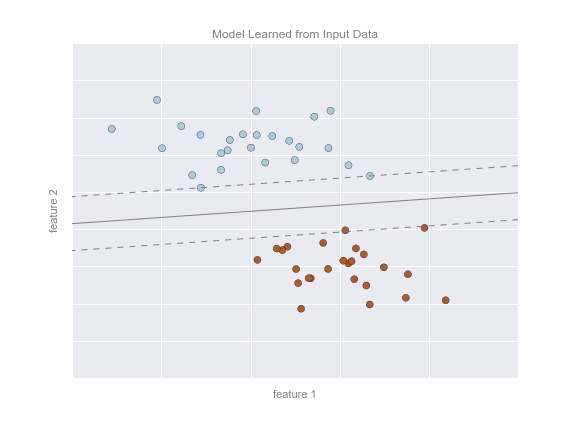

A Brief Introduction to ML & AI
Contents
A Brief Introduction to ML & AI¶
Data Science VS Machine Learning VS Artificial Intelligence¶

‘What is Data Science?’,
Data science is a broad field of study pertaining to data systems and processes, aimed at maintaining data sets and deriving meaning out of them.
Data scientists use a combination of tools, applications, principles and algorithms to make sense of random data clusters. Since almost all kinds of organizations today are generating exponential amounts of data around the world, it becomes difficult to monitor and store this data.
Data science focuses on data modelling and data warehousing to track the ever-growing data set. The information extracted through data science applications are used to guide business processes and reach organisational goals.
Data science uses a wide array of data-oriented technologies including SQL, Python, R, and Hadoop, etc. However, it also makes extensive use of statistical analysis, data visualization, distributed architecture, and more to extract meaning out of sets of data.
Data scientists are skilled professionals whose expertise allows them to quickly switch roles at any point in the life cycle of data science projects. They can work with Artificial Intelligence and machine learning with equal ease. In fact, data scientists need machine learning skills for specific requirements
What is artificial intelligence (AI)?¶
Video:What is AI (Artificial Intelligence)?
Artificial intelligence is the simulation of human intelligence processes by machines, especially computer systems. Specific applications of AI include expert systems, natural language processing, speech recognition and machine vision
How does AI work? In general, AI systems work by ingesting large amounts of labeled training data, analyzing the data for correlations and patterns, and using these patterns to make predictions about future states. In this way, a chatbot that is fed examples of text chats can learn to produce lifelike exchanges with people, or an image recognition tool can learn to identify and describe objects in images by reviewing millions of examples. Often what they refer to as AI is simply one component of AI, such as machine learning. AI requires a foundation of specialized hardware and software for writing and training machine learning algorithms .
Machine Learning¶
In many ways, machine learning is the primary means by which data science manifests itself to the broader world. Machine learning is where these computational and algorithmic skills of data science meet the statistical thinking of data science, and the result is a collection of approaches to inference and data exploration that are not about effective theory so much as effective computation.
The term “machine learning” is sometimes thrown around as if it is some kind of magic pill: apply machine learning to your data, and all your problems will be solved! As you might expect, the reality is rarely this simple.
While these methods can be incredibly powerful, to be effective they must be approached with a firm grasp of the strengths and weaknesses of each method, as well as a grasp of general concepts such as bias and variance, overfitting and underfitting, and more.
Machine learning involves observing and studying data or experiences to identify patterns and set up a reasoning system based on the findings. The various components of machine learning include:¶
Supervised machine learning: This model uses historical data to understand behaviour and formulate future forecasts. This kind of learning algorithms analyse any given training data set to draw inferences which can be applied to output values. Supervised learning parameters are crucial in mapping the input-output pair.
Unsupervised machine learning: This type of ML algorithm does not use any classified or labelled parameters. It focuses on discovering hidden structures from unlabeled data to help systems infer a function properly. Algorithms with unsupervised learning can use both generative learning models and a retrieval-based approach.
Semi-supervised machine learning: This model combines elements of supervised and unsupervised learning yet isn’t either of them. It works by using both labelled and unlabeled data to improve learning accuracy. Semi-supervised learning can be a cost-effective solution when labelling data turns out to be expensive.
Reinforcement machine learning: This kind of learning doesn’t use any answer key to guide the execution of any function. The lack of training data results in learning from experience. The process of trial and error finally leads to long-term rewards.
Machine Learning in a nutshell¶
Set of techniques for giving machines the ability to to find patterns and extract rules from data, in order to:
Identify or classify elements
Detect tendencies
Make predictions
As more data is fed into the system, results get better: performance improves with experience.
a.k.a. Statistical Learning.
Typology of ML systems¶
ML systems are traditionally classified in three categories, according to the amount and type of human supervision during training.
Supervised Learning: expected results (called labels or tags) are given to the system along with training data.
Unsupervised Learning: training data comes without the expected results. The system must discover some structure in the data by itself.
Reinforcement Learning: without being given an explicit goal, the system’s decisions produce a reward it tries to maximize.
Classification: Predicting discrete labels¶
We will first take a look at a simple classification task, in which you are given a set of labeled points and want to use these to classify some unlabeled points.
Imagine that we have the data shown in this figure:

Here we have two-dimensional data: that is, we have two features for each point, represented by the (x,y) positions of the points on the plane. In addition, we have one of two class labels for each point, here represented by the colors of the points. From these features and labels, we would like to create a model that will let us decide whether a new point should be labeled “blue” or “red.”
There are a number of possible models for such a classification task, but here we will use an extremely simple one. We will make the assumption that the two groups can be separated by drawing a straight line through the plane between them, such that points on each side of the line fall in the same group. Here the model is a quantitative version of the statement “a straight line separates the classes”, while the model parameters are the particular numbers describing the location and orientation of that line for our data. The optimal values for these model parameters are learned from the data (this is the “learning” in machine learning), which is often called training the model.
The following figure shows a visual representation of what the trained model looks like for this data:

Now that this model has been trained, it can be generalized to new, unlabeled data. In other words, we can take a new set of data, draw this model line through it, and assign labels to the new points based on this model. This stage is usually called prediction. See the following figure:

This is the basic idea of a classification task in machine learning, where “classification” indicates that the data has discrete class labels. At first glance this may look fairly trivial: it would be relatively easy to simply look at this data and draw such a discriminatory line to accomplish this classification. A benefit of the machine learning approach, however, is that it can generalize to much larger datasets in many more dimensions.
For example, this is similar to the task of automated spam detection for email; in this case, we might use the following features and labels:
feature 1, feature 2, etc. \(\to\) normalized counts of important words or phrases (“Viagra”, “Nigerian prince”, etc.)
label \(\to\) “spam” or “not spam”
For the training set, these labels might be determined by individual inspection of a small representative sample of emails; for the remaining emails, the label would be determined using the model. For a suitably trained classification algorithm with enough well-constructed features (typically thousands or millions of words or phrases), this type of approach can be very effective. We will see an example of such text-based classification
Regression: Predicting continuous labels¶
In contrast with the discrete labels of a classification algorithm, we will next look at a simple regression task in which the labels are continuous quantities.
Consider the data shown in the following figure, which consists of a set of points each with a continuous label:

As with the classification example, we have two-dimensional data: that is, there are two features describing each data point. The color of each point represents the continuous label for that point.
There are a number of possible regression models we might use for this type of data, but here we will use a simple linear regression to predict the points. This simple linear regression model assumes that if we treat the label as a third spatial dimension, we can fit a plane to the data. This is a higher-level generalization of the well-known problem of fitting a line to data with two coordinates.
We can visualize this setup as shown in the following figure:

Notice that the feature 1-feature 2 plane here is the same as in the two-dimensional plot from before; in this case, however, we have represented the labels by both color and three-dimensional axis position. From this view, it seems reasonable that fitting a plane through this three-dimensional data would allow us to predict the expected label for any set of input parameters. Returning to the two-dimensional projection, when we fit such a plane we get the result shown in the following figure:
This plane of fit gives us what we need to predict labels for new points. Visually, we find the results shown in the following figure:
As with the classification example, this may seem rather trivial in a low number of dimensions. But the power of these methods is that they can be straightforwardly applied and evaluated in the case of data with many, many features.
For example, this is similar to the task of computing the distance to galaxies observed through a telescope—in this case, we might use the following features and labels:
feature 1, feature 2, etc. \(\to\) brightness of each galaxy at one of several wave lengths or colors
label \(\to\) distance or redshift of the galaxy
The distances for a small number of these galaxies might be determined through an independent set of (typically more expensive) observations. Distances to remaining galaxies could then be estimated using a suitable regression model, without the need to employ the more expensive observation across the entire set. In astronomy circles, this is known as the “photometric redshift” problem.
Clustering: Inferring labels on unlabeled data¶
The classification and regression illustrations we just looked at are examples of supervised learning algorithms, in which we are trying to build a model that will predict labels for new data. Unsupervised learning involves models that describe data without reference to any known labels.
One common case of unsupervised learning is “clustering,” in which data is automatically assigned to some number of discrete groups. For example, we might have some two-dimensional data like that shown in the following figure:

By eye, it is clear that each of these points is part of a distinct group. Given this input, a clustering model will use the intrinsic structure of the data to determine which points are related. Using the very fast and intuitive k-means algorithm , we find the clusters shown in the following figure:
k-means fits a model consisting of k cluster centers; the optimal centers are assumed to be those that minimize the distance of each point from its assigned center. Again, this might seem like a trivial exercise in two dimensions, but as our data becomes larger and more complex, such clustering algorithms can be employed to extract useful information from the dataset.
Dimensionality reduction: Inferring structure of unlabeled data¶
Dimensionality reduction is another example of an unsupervised algorithm, in which labels or other information are inferred from the structure of the dataset itself. Dimensionality reduction is a bit more abstract than the examples we looked at before, but generally it seeks to pull out some low-dimensional representation of data that in some way preserves relevant qualities of the full dataset. Different dimensionality reduction routines measure these relevant qualities in different ways
As an example of this, consider the data shown in the following figure:

Visually, it is clear that there is some structure in this data: it is drawn from a one-dimensional line that is arranged in a spiral within this two-dimensional space. In a sense, you could say that this data is “intrinsically” only one dimensional, though this one-dimensional data is embedded in higher-dimensional space. A suitable dimensionality reduction model in this case would be sensitive to this nonlinear embedded structure, and be able to pull out this lower-dimensionality representation.
The following figure shows a visualization of the results of the Isomap algorithm, a manifold learning algorithm that does exactly this:

Notice that the colors (which represent the extracted one-dimensional latent variable) change uniformly along the spiral, which indicates that the algorithm did in fact detect the structure we saw by eye. As with the previous examples, the power of dimensionality reduction algorithms becomes clearer in higher-dimensional cases. For example, we might wish to visualize important relationships within a dataset that has 100 or 1,000 features. Visualizing 1,000-dimensional data is a challenge, and one way we can make this more manageable is to use a dimensionality reduction technique to reduce the data to two or three dimensions.
Summary¶
Here we have seen a few simple examples of some of the basic types of machine learning approaches. Needless to say, there are a number of important practical details that we have glossed over, but I hope this section was enough to give you a basic idea of what types of problems machine learning approaches can solve.
In short, we saw the following:
Supervised learning: Models that can predict labels based on labeled training data
Classification: Models that predict labels as two or more discrete categories
Regression: Models that predict continuous labels
Unsupervised learning: Models that identify structure in unlabeled data
Clustering: Models that detect and identify distinct groups in the data
Dimensionality reduction: Models that detect and identify lower-dimensional structure in higher-dimensional data
In the following sections we will go into much greater depth within these categories, and see some more interesting examples of where these concepts can be useful.
All of the figures in the preceding discussion are generated based on actual machine learning computations; the code behind them can be found in my github resource